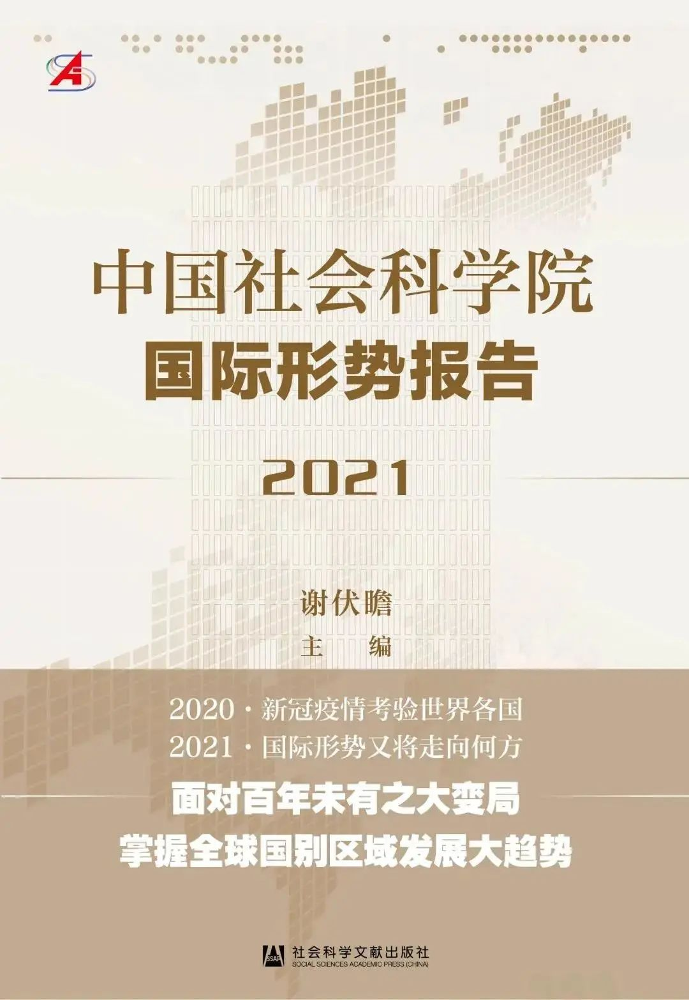
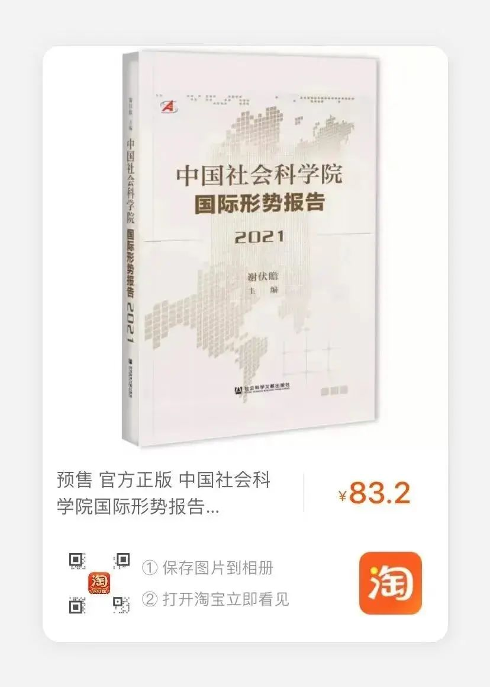
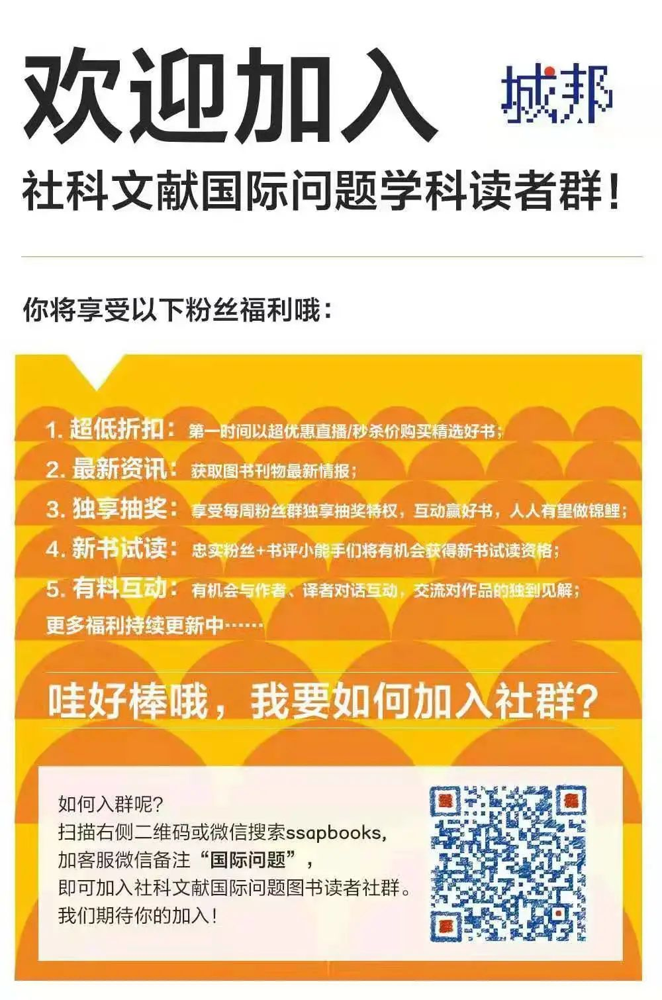

收录于合集


新书简介

《中国社会科学院国际形势报告2021》 **** ****
作者：谢伏瞻 主编
出版日期：2021年2月
定价：128元
ISBN：978-7-5201-7866-2
推荐语
2020年世界经济受新冠肺炎疫情影响急剧衰退，国际政治中大国博弈色彩浓郁，传统安全与非传统安全威胁双双上升，国际治理在双边及区域层面上发力。全球形势总体表现出多极化趋势更加明显、竞争性态势更加显著、安全化倾向更加突出、集团化现象更加鲜明等特征。
2021年世界经济有望实现恢复性增长，世界多极化格局进一步显现，一些国家内部政治极化、社会分化趋势加剧，国际互动中以意识形态划界的观念沉渣泛起，美国挑起的大国博弈由对抗为主转向竞争与合作并举，国际治理由区域一体化为主转向多边与区域并行。
于2月24日在京发布的《中国社会科学院国际形势报告（2021）》一书是有关2020~2021年全球形势分析与展望的年度报告。全书在总论之外，主要以地区为单位，对2020年几个大国（美国、日本、俄罗斯）及各地区的经济、政治、社会、外交领域形势，以及重大事件和风险进行了综合分析，在此基础上，对2021年全球世界格局发展趋势进行预判。该书由中国社会科学院院长谢伏瞻主编，由国际学部各所组织人员撰写各篇报告，内容权威，具有很强的现实指导意义。
作者介绍
谢伏瞻 ，1954 年8 月生，研究员，博士生导师。现任中国社会科学院院长、党组书记，学部委员，学部主席团主席。历任国务院发展研究中心副主任、国家统计局局长、国务院研究室主任、河南省人民政府省长、河南省委书记；曾任中国人民银行货币政策委员会委员。1991 年、2001 年两次获孙冶方经济科学奖；1996 年获国家科技进步奖二等奖。1991-1992 年美国普林斯顿大学访问学者。主要研究方向为宏观经济政策、公共政策、区域发展政策等。先后主持完成“东亚金融危机跟踪研究”“国有企业改革与发展政策研究”“经济全球化与政府作用的研究”“金融风险与金融安全研究”“完善社会主义市场经济体制研究”“中国中长期发展的重要问题研究”“不动产税制改革研究”等重大课题研究。
篇章节选
2021年，新冠肺炎疫情大流行对全球政治经济安全的直接冲击或有减弱，间接或次生影响仍然不能忽视，以下十项全球性发展趋势值得高度关注。
（一）世界经济启动恢复性增长
在经历新冠肺炎疫情冲击的经济下挫之后，2021年世界经济将在此前较低的基数基础上重启增长。国际货币基金组织（IMF）预计，2021年世界经济实际GDP增长率将达到5.5%，较上年增长回升9个百分点。其中，新兴和发展中经济体2021年实际GDP增长率将由上年的-2.4%回升至6.3%，发达国家也将由上年的-4.9%恢复至4.3%。新兴和发展中经济体经济年增速高于发达经济体2个百分点以上的增长态势在世界经济复苏阶段仍将延续。受此影响，新兴和发展中经济体由于危机之中脆弱性较高而出现的经济规模占世界比重下滑势头逆转（2020年较上年下降了0.2个百分点），2021年经济规模占世界比重预计由上年的40.6%小幅上升至40.7%，IMF还预计到2025年将进一步提升至43.7%。支持世界经济恢复性增长的因素包括疫情随着疫苗的普及逐渐平复而带来的供给的恢复、疫情期间被迫压缩或延期的需求的释放、刺激性宏观经济政策效果开始显现等。
从主要经济体的情况来看，IMF预计G20各成员国在2021年都将实现正增长。其中，实际GDP增速达到或超过5%的有中国、印度等9个国家。实际GDP增长率预计为3%～5%的有美国、德国等7个国家。预计不到3%的是韩国、巴西、俄罗斯和日本。印度取得相对较高的增长率，是基于上年经济收缩10.3%的较低水平而实现的。与印度类似的还有美国等14个国家，这些国家2020年和2021年实际GDP增长率的均值都小于零。中国、印尼、韩国和土耳其两年均值大于零，分别为5.0%、2.3%、0.5%和0.01%。尽管主要经济体2021年都开始恢复性增长，但各国面对疫情冲击的韧性与弹性各有不同，中国、印尼的经济表现相对更胜一筹。
（二）中美经济规模差距进一步缩小
新冠肺炎疫情大流行加剧了中国经济规模相对美国上升的态势。在以二十国集团（G20）成员为代表的主要经济体中，只有中国在2020年还能维持经济正增长。尽管1.9%的增长率较上年的6.1%也有明显下降，但能在如此重大的疫情冲击下坚持增长不停步殊为不易。这与中国决断早、行动快、举措有力、制造业基础雄厚且得到“互联网+”的有效支撑，从而率先控制住疫情并防止了后续几波反复等因素有关。美国受疫情大流行影响，预计2020年经济收缩4.3%。此消彼长之下，中国经济规模将进一步接近美国。IMF于2019年10月在疫情发生之前按市场汇率计算的预测值显示，2020年中国GDP与美国GDP之比为68.4%，其2020年10月发布的充分考虑了疫情大流行影响的最新预测结果显示，2020年中国GDP将占到美国的73.2%，这一数字将打破日本1995年创下的71.3%的纪录，中国经济将在2020年成为19世纪末美国超过英国以来的100多年间，与美国经济规模最接近者。IMF在疫情之前对2021年中国GDP占美国比重的预测值是71.5%，疫情发生之后调整为76.8%，上调了5.3个百分点；IMF还预计到2025年，中国GDP占美国比重将达到90%。
如果按购买力平价（PPP）计算，2014年中国GDP就首次超过了美国。自1872年美国按PPP计算的GDP超过英国成为世界第一以来，这也是一个半世纪中首次有国家反超美国。此前被视为美国主要对手的苏联和日本，在其鼎盛时期的经济规模与美国也存在较大差距，更别说反超美国了。20世纪30年代中后期，美欧刚从大危机冲击下恢复，同期苏联凭借社会主义体制优势经济建设获得巨大成就，这一时期按PPP计算的苏联GDP占美国的比重也只在1938年达到了50.69%的峰值（其他年份都没超过50%）；美苏争霸最激烈的20世纪70年代，苏联GDP占美国的比重最高也只达到44.40%（时为1975年）。西方国家中长期位居第二的日本，因为苏联的崩溃还一度成为名副其实的世界第二经济大国，它的经济规模与美国的差距也比一般人印象之中要大得多。进入20世纪80年代后，“日本第一”的观念开始流行，一股“已经不需要向欧美学习”的乐观风气弥漫整个日本经济界。尽管如此，从按PPP计算的日本GDP占美国比重来看，那个时期里日本最高的年份1991年也只有41.42%，其后很快就因为股市与房地产泡沫的破裂，陷入长期停滞。反观中国，按PPP计算的GDP超过美国后一路上扬，2019年是美国的109.1%，2020年上升至116.1%，2021年将进一步上升至121.9%。
如果用按市场汇率计算和按PPP计算的平均值来衡量，那么中国GDP占美国GDP比重的均值将在2021年达到99.4%，并在2022年达到102.4%，实力的迅速接近将让中美博弈更趋复杂化。
（三）世界政治多极化格局进一步显现
英国“脱欧”之后，欧盟内部紧密化和一致性程度上升，且其作为整体的经济规模依旧庞大，这为其成为多极化世界中更加重要一极奠定了比较坚实的政治经济基础。受疫情大流行等因素影响，按市场汇率计算，欧盟作为整体的经济规模或将在2020年首次被中国超过。IMF预测结果显示，2020年按市场汇率计算欧盟GDP占美国比重将由2019年的72.9%下降至71.7%，低于中国的73.2%。尽管如此，欧盟仍稳居世界前三大经济体之列。
欧盟特别强调“一个团结、有能力和自力更生的欧盟对欧洲有利，对跨大西洋伙伴关系有利，对多边体系有利”，有意“引领世界走向绿色、循环、竞争和包容性经济”，希望“坚持自己的技术目标和雄心……塑造技术、技术的使用和监管环境”，声称要“在改革世贸组织方面发挥共同领导作用”。一个追求团结、自力更生并且雄心勃勃的强大欧盟，有资格成为全球政治格局中独立一极。对此，美国总统拜登的政府至少表面上难以明确反对。对其他国家来说，多一个独立自主而又在实力上可与美国并峙于相同数量级的经济体，将大大增加这些国家自身的战略回旋空间，因此，对欧盟的强大，这些国家将更多持乐观其成的态度。欧盟在新冠肺炎疫情大流行期间开启的“财政联盟”合作，可能会面临相对友善的内外部环境。
俄罗斯凭借其强大的全球性战略军事力量，在中亚、中东等重要地缘政治区域及互联网空间娴熟的操控力，以及牢固的联合国安理会常任理事国地位，在世界政治中依旧发挥着独立的重要一极的作用。此外，日本长期在亚洲开发银行中有巨大影响力，美国退出《跨太平洋伙伴关系协定》（TPP）后又成为推动签署《全面与进步跨太平洋伙伴关系协定》（CPTPP）的挑头者或主导国，又是新签署的《区域全面经济伙伴关系协定》（RCEP）的重要参与国，其在亚太地区扮演重要角色。印度和澳大利亚也在各自所处的南亚、南太区域拥有其他国家所不及的支配性力量。预计2021年起，中美欧俄日印澳等成为相对独立且竞合并举之“诸极”的新型多极化格局将逐步成型。
（四）一些国家内部政治极化、社会分化趋势加剧
2021年一些国家内部政治极化、社会分化的趋势将进一步加剧，修补难度加大。在欧洲，“脱欧”派与“留欧”派、支持接收移民的群体与“反移民”的民粹主义者、支持绿党的环保主义者与农业协会的农民、极右翼势力和极左翼势力等，在许多城市的同一个公共空间中竞相“表演”游行或破坏。
在美国，2020年67%的总统选举投票率创下120年来的新高，竞选连任失败的总统特朗普获得的普选票超过7400万张，大大超过2016年选举中希拉里获得的6585万张及奥巴马2012年再次当选时的6592万张，这从一个侧面反映了其国内政治的分裂与极化，以至于评论者多认为特朗普“走了”，但特朗普主义还将长期存在。2021年1月6日，美国国会参众两院再次清点此次总统大选选举人票时，特朗普的支持者们大量涌入华盛顿特区，并使用暴力冲击正在进行选票复核的国会大厦，选票的清点工作被迫暂停，副总统彭斯等相关人员被紧急护送到安全区域。彭斯被迫下令调动华盛顿特区国民警卫队到现场控制形势，这次冲突造成了特朗普支持者和警察的人员伤亡。
在印度，疫情也加重了国内阶层分化的恶果。2020年11月，本就负担沉重的农民不满莫迪农业新政，在新德里举行大规模抗议。示威迅速向全国各地铁路、商业、街道、工厂等蔓延，并因为军警的镇压而更趋激烈。
政治极化是经济社会分化的投射。新冠肺炎疫情加剧了各国内部的不平等和脆弱性。例如，美国低薪服务业人员的失业人数大幅增加，有色人种感染和死亡比例更高。美联储数据显示，美国最富有的50人的财富总值近2万亿美元，比2020年初增加了3390亿美元，而最贫穷的50%美国人、约1.65亿人的净资产仅为2.1万亿美元。该数据同时显示，美国白人拥有全国财富的83.9%，而黑人家庭拥有的财富仅为4.1%。
（五）国际互动中以意识形态划界的观念沉渣泛起
欧美联手将世界拖入意识形态纷争旋涡的势头正在凸显。一方面，拜登政府打“意识形态牌”的积极性非常高，强调“民主不仅是美国社会的基础，也是我们力量的源泉”“邀请世界各地的民主领导人同侪将加强民主重新列入全球议程”。当然，“民主”“人权”等也是民主党惯用的意识形态“大棒”，同时拿下总统宝座和国会的民主党继续把这条“大棒”挥舞起来是大概率事件。
另一方面，欧盟将主动迎合拜登的全球“民主”峰会想法，并准备支持包括亚洲在内世界各地的所谓“民主”运动。2021年，欧美为主的西方发达国家可能人为制造所谓“民主社会和市场经济国家”与“非民主社会和非市场经济国家”之间的差异和对立，诱使或胁迫本国及相关国家的私人部门退出与“非民主社会和非市场经济国家”的合作，力求将意识形态对立策划为一桩对西方国家私人部门和政府都有利可图的“事业”。例如，蓬佩奥力推的“清洁网络”就人为将互联网区分为两类，污蔑中国等国家支持的是威胁数据隐私、安全、人权和有原则合作的威权恶意行为者的网络，鼓吹美国及其盟友支持的是“自由世界”的网络。蓬佩奥之流竭力游说各国加入“清洁网络”计划。例如，以提供更换设备的资金补贴等为诱饵，诱使乌克兰等国在政府部门的大楼中拆除此前安装的华为设备，并使其在该国“智慧城市”项目上拒绝和华为合作而选择美国思科公司。
欧美还出于意识形态偏见等原因，对中国内政指手画脚甚至横加干涉。对严重侵犯中国主权安全发展利益的人员，中国开始运用制裁手段予以震慑。例如，特朗普政府卸任后，中国宣布决定对在涉华问题上严重侵犯中国主权、负有主要责任的28名美国官员实施制裁。拜登政府期间，美国以意识形态分歧为名推动对华“脱钩”的行动，可能不会随着特朗普政府的终结而自动结束，甚至可能在形式上有所调整之后变本加厉，双方意识形态上的交锋或将更趋激烈。2021年，中俄等国面临欧美以意识形态议题为工具施压的风险上升。
（六）美国挑起的大国博弈由对抗为主转向竞争与合作并举
美国特朗普政府推动形成的以竞争甚至对抗为主的大国关系在2021年可能出现转折，主要国家或经济体间更可能在各领域建立务实的竞争与合作并举的关系，在其中一些领域更强调竞争，而在另一些领域更强调合作。对待盟友，美当选总统拜登反对特朗普政府的“交易性”关系定位和双边施压方式，将重申承诺、加大投资，在恢复历史性伙伴关系的基础上重塑盟友关系。美国会更加在意盟友的意见，而不是像特朗普政府期间，对盟友的贸易顺差毫不容忍且不做任何区分地施加制裁。欧盟发布的《欧盟- 美国应对全球变化的新议程》也认为随着美国政府的更迭，欧盟和美国之间可能并且应该设计一个新的跨大西洋的全球合作议程，并提出了相关建议。对中国，拜登一方面强调协调盟友立场并通过规则等方式加以规锁，另一方面也表示愿意在气候变化、防扩散和全球健康安全等领域加强合作，而不是一味搞“极限施压”。对俄罗斯，拜登政府或将采取更加激进的打压政策，换个角度看，其压力可能传导为俄罗斯寻求更紧密对中国合作的动力。
从中国方面看，中国一贯认为中美之间虽然存在若干分歧，但是拥有广泛的共同利益和合作空间，希望与美国秉持不冲突不对抗、相互尊重、合作共赢的原则建立正常大国关系，聚焦合作，管控分歧，推动双方关系沿着正确的轨道健康稳定向前发展。中美在经贸等领域的务实合作可能取得进展，尽管在高科技领域的激烈竞争仍然难以避免。对欧洲，中国则认为双方经济高度互补，合作多于竞争、共识大于分歧。中方始终支持欧洲一体化进程，始终支持一个团结、稳定、繁荣的欧盟在国际事务中发挥更大作用，因为这有利于经济全球化、世界多极化和文明多样化。美国竞争压力之下，中俄战略协作伙伴关系日益深化，将更加强化各领域合作，并致力于共同维护全球战略稳定。2021年国际关系中大国全方位消极对抗的一面可能下降，在不同领域竞合并行的复杂性增加。
（七）国际治理由区域一体化为主转向多边与区域并行
多边合作迎来新的契机。相对更加强调多边规则的拜登政府取代注重双边施压的特朗普政府登上美国政治舞台，旋即宣布重返《巴黎协定》并中止退出WHO程序。拜登表示“要消除惩罚美国人的贸易壁垒，抵制危险的全球保护主义滑坡”，要和其他“民主”国家联合制定“环境、劳工、贸易、技术和透明度等各个方面”的规则。这些与欧洲强调的“基于规则的多边秩序”，以及对美国在改革世界贸易组织方面“发挥共同领导作用”“探讨如何通过改革上诉机构恢复基本的争端解决功能”“加强欧盟- 美国-日本之间的三方合作，就公平竞争环境问题提出建议”“共同努力，推进世界贸易组织电子商务谈判”等期待是比较一致的。受此推动，WTO改革可能重回议事日程。
2021年，中国也将推动共建“一带一路”倡议高质量发展取得新成果。中国与非洲联盟签署《中华人民共和国政府与非洲联盟关于共同推进“一带一路”建设的合作规划》，是中国和区域性国际组织签署的第一个共建“一带一路”规划类合作文件，围绕政策沟通、设施联通、贸易畅通、资金融通、民心相通等领域，明确了合作内容和重点合作项目，2021年将按照时间表、路线图推进相关建设。2021年1月，中国国务委员兼外长王毅同博茨瓦纳外长夸佩（Lemogang Kwape）签署了共建“一带一路”谅解备忘录，自此，同中国签署“一带一路”合作文件的非洲国家已增加至46个。“工笔画”阶段的“一带一路”将焕发出更大活力和吸引力。
尽管在可预见的将来，全球层面的多边协商仍然存在很多具体困难，但国际合作由区域一体化和多边主义双轮驱动的新动力正在形成。区域合作方面，加入CPTPP或将CPTPP与《跨大西洋贸易与投资伙伴协议》（TTIP）整合起来可能成为美国的政策选项。《区域全面经济伙伴关系协定》取得显著进展，可能在2021年得到各国核准。RCEP成员国达成共同建立一个现代、全面、高质量以及互惠共赢的经济伙伴关系合作框架的目标，签署了一个开放的、包容的、基于规则的贸易投资安排。区域一体化的进展，对地区和全球应对新冠肺炎疫情至关重要，并将在疫后通过包容和可持续的经济复苏进程打造区域韧性发挥重要作用。
（八）技术进步及其运用范围拓展影响国家安全
大数据、人工智能、无人机等技术进展日新月异，不仅影响着人类的生产生活方式，对军事和国家安全也产生重大影响。首先，战争场域大为拓展。在先进技术支持下，战争出现由传统海陆空拓展至太空、由宏观空间发展至微观空间、由物理世界延展至虚拟世界、由战斗场景扩展至生活场景等转变。其次，对抗手段更加丰富。定向能、生命科学、人工智能、网络、高超音速等领域技术在军事应用方向上的发展，可能让战争的指挥、实施及效果检验方式多样化。最后，战争伦理发生变化。随着人工智能等技术的发展，技术对劳动力的边际替代率递减规律被打破，劳动可以被非人力技术完全取代，作为劳动载体的劳动者的价值可能下降，而基于虚拟现实的远程作战技术和无人作战平台的兴起，可能加剧参战者对人类生命的无视从而增加战争的残暴性。
技术飞速变化正在开始改变战争的形式与性质。随着数字技术在军事领域的大量使用，与实体战线并行的数字战线被开辟出来，“致命自主武器”（LAWS）的研发与大规模部署，不仅将彻底改变军人在人们心目中的传统形象，而且还会引起一系列的伦理问题：智能战士是否是杀人凶手？与此同时，所谓“灰色地带”已经成为新一代军事专家热衷讨论的概念，其含义是在实施侵略或胁迫的同时不引致事态升级和规避严重报复，换句话说难以确定真正的责任方，比如网络攻击或宣传颠覆等。颇值得深思的是，世界快速网络化使国家间权力结构深受影响。网络世界在推动分散化或分权化的同时，又让美国等网络主导国家拥有巨大的网络权力，并具体表现在对他国的全景监控（panopticons）和阻断（strokepoints）优势之上。这种优势不仅具有自我强化性质，而且有可能被网络霸主当作武器加以使用。2021年，可能发生更多以无人机、自动杀人装置、电脑病毒为主要武器或“参战者”的特种战争。
（九）全球供应链向安全化、弹性化方向调整
新冠肺炎疫情大流行期间的大封锁、大中断让多数国家认识到供应链安全的重要性，但一些国家将供应链安全推向“绝对安全”的极端，将造成新的风险和挑战。无论是人为的政策性封锁或抢夺造成的供应链防御型安全问题，还是传染病等非人为的客观性往来中断造成的供应链管理型安全问题，都成为各国决策者决意应对的问题。
2021年，全球供应链和研发格局的分布可能开始由效率导向更大程度转向安全导向。各国强调“国家安全”优先，转而把所谓的技术含量高的环节保留在国内，或者从可能“威胁”其“国家安全”的国家转到其他国家，特别是转到那些在传统安全上对自己存在高度依赖的国家，一旦把对安全的需求推到极端，追求“绝对安全”，变成两个甚至更多全球性供应集团之间的相互攻讦，将对全人类的科学研究和技术进步事业将产生掣肘效应。真正的安全，立基于开放和发展，根本之道是通过数字经济等新技术支撑的经济形态打造免疫化、便利化、弹性化、智能化、安全化的国内及全球新型供应链。
以中国为代表的生产能力强、防疫举措有力的国家，可能成为其他国家备份供应链的全球安全岛。实际上，中国已经开始发挥这样的作用。疫情发生之后，中国积极动员国内庞大的制造业体系将生产向抗疫物资领域转移汇集，一方面满足本国疫情防控需要；另一方面想方设法为各国采购防疫物资提供力所能及的支持和便利，打通需求对接、货源组织、物流运输、出口通关等方面堵点，畅通出口环节，有序开展防疫物资出口。2020年1～10月，中国药品出口金额累计同比增长28.5%，光学、照相、医疗设备及零附件累计出口同比增长7.4%，增长率显著高于上年同期的3.7%和1.7%。这些事实表明，疫情发生后中国发挥了公共卫生全球安全岛的积极作用，其中中国强大的生产能力及中国产品功不可没，成为构筑全球安全岛的中流砥柱。
（十）极端天气等气候变化后果造成自然灾害频发
近年气候变化趋势持续恶化，给人类造成的生命财产损失和其他间接危害不断加剧。巴西、澳大利亚和美国加州等地的森林大火频发，非典、中东呼吸综合征、新冠肺炎等接连肆虐，这些都与气候变化息息相关。
2021年，世界上极端天气出现的频率可能上升，沿海地区经受暴雨、台风、飓风，主要森林地区爆发大规模山火，主要粮食产区经受洪涝、干旱、蝗灾，北极地区夏季无冰区扩大，南极地区大面积冰盖消失……这些问题可能更加严重。受人为因素影响，这些自然灾害可能和疫情一起给人类特别是发展中或欠发达国家的脆弱群体带来生存危机、粮食危机、物种衰减危机。例如，世界粮食计划署称，非洲、拉美等地的发展中国家正在或即将遭受饥荒。即使在发达经济体，在高失业率的情况下，穷人也承受着食品价格上涨的痛苦。
2020年是人类历史上不平凡的一年。世界遭遇新冠肺炎疫情大流行的重创，但世人也更加深刻地认识了人类命运共同体的理念，人类文明的巨轮并未在狂风巨浪中倾覆或停止航行。2021年世界或将从深度衰退中恢复，但复苏的速度和强度受到疫情平复状况、大国关系走势等诸多风险或不确定性因素的制约。客观认识和理性评估世界格局演变发展趋势及存在的风险，对在抗击疫情的严峻考验中站上“新发展阶段”“开启全面建设社会主义现代化国家新征程、向第二个百年奋斗目标进军”[45]的中国尤为重要。在此基础上，坚持新发展理念的指引并大力推进构建新发展格局，中国有望在新一年中，在引领全球经济复苏、筑牢世界安全底线、改善国际治理合作等方面做出新的更大贡献。
中文目录
总报告 / 1
全球形势分析与展望 / 3
分报告 / 41
俄罗斯及欧亚地区形势分析与展望 / 43
欧洲形势分析与展望 / 70
非洲形势分析与展望 / 106
中东地区形势分析与展望 / 136
拉美地区形势分析与展望 / 168
亚太地区形势分析与展望 / 197
美国形势分析与展望 / 246
日本形势分析与展望 / 284
 
转载自：城邦的世界微信公众号

好好学习，天天“在看”